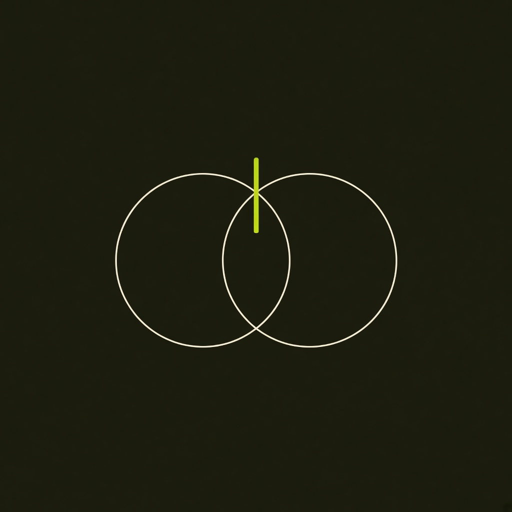
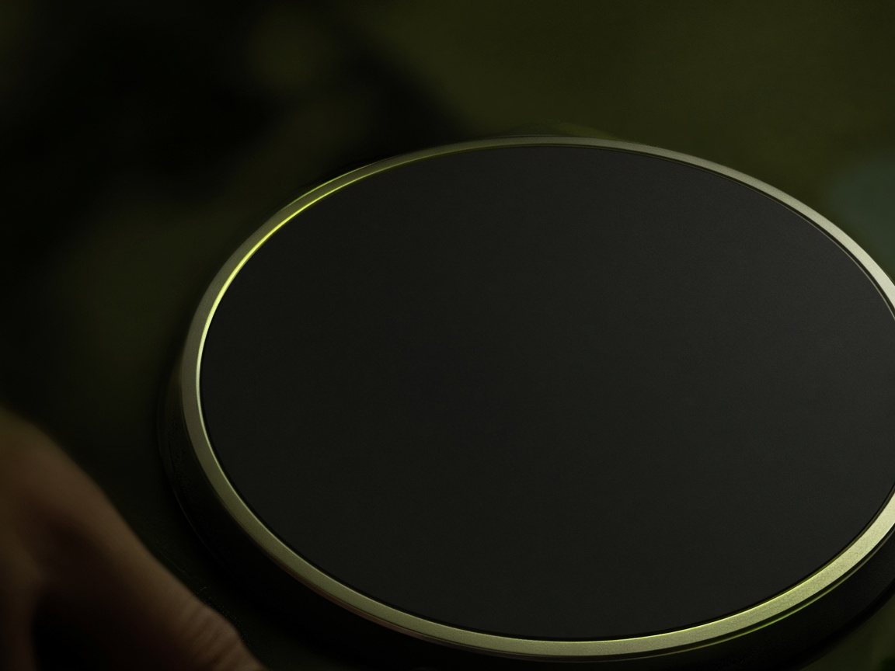

Estúdio
A marca é uma agulha, não um letreiro.
Vibe é a energia que a sala devolve. DJ é o ofício. O símbolo junta os dois pratos e uma agulha lima — a única cor que corta o escuro, porque o ouvido também é um ponto só.


Cor com função
Cada cor faz um trabalho. Se tudo brilha, nada é sinal. O fundo é a sala apagada. O marfim é texto. A lima é a agulha: playhead, BPM, ação principal. A brasa é o cue, como na memória muscular de quem já viu uma cabine. O cobre é calor humano — notas, avisos, o que não é alarme. O verde-água é o agudo da forma de onda.
#0C0D0ACabine. O fundo não compete com o display.
#E8E2D4Marfim. Texto longo, menos frio que o branco puro.
#E4FF57Lima. Um acento só: agulha, BPM, botão que importa.
#FF6A3DBrasa. Cue e a faixa grave da forma de onda.
#D7B08ACobre. Aviso e tom de voz, sem parecer erro.
#7ED0C4Mar. Agudos do waveform, para o olho separar as bandas.
Três famílias de tipo
Syne fala como a sala.
Outfit lê o estudo. A medida do texto fica em torno de 66 caracteres, para a frase musical e a frase escrita terem fôlego parecido.
124.0 BPM
IBM Plex Mono é o display do player. Número de instrumento, não de anúncio. O BPM grande existe para ser lido de pé, como numa cabine.
Interface que sugere o gesto
No celular, a cabine não esmaga os dois decks e o mixer num único scroll impossível. Você escolhe Deck A, mixer ou Deck B, e uma linha fixa diz se o outro lado está tocando. No desktop, a geometria é a da noite: player, mixer, player.
Cada controle tem rótulo de palavra — PLAY, CUE, TRIM — porque é assim que se conversa na cabine. Os sinais com emoji ficam no método, como âncora de memória do estudo, e não em cima do jog. Emoji no equipamento viraria ruído.
Os players se chamam Agulha V1 e o mixer, Cabine M2. O layout segue a lógica profissional, com nomes desta academia. Não é réplica de um fabricante.
Como o site está armado
HTML guarda o texto, para a leitura e a busca enxergarem a trilha mesmo antes do JavaScript. CSS desenha. O áudio nasce no navegador, com Web Audio, a partir de padrões originais — house, techno, afro house, melodic techno e drum and bass. Não há faixa protegida por direito de terceiros dentro do simulador.
Uma página, um assunto: início, trilha, conceitos, método, estúdio, simulador. Título e descrição próprios em cada uma. O simulador pede um gesto — ligar o sistema — porque o navegador só libera som depois de uma ação sua, e porque volume alto de kick não é boa-vinda.